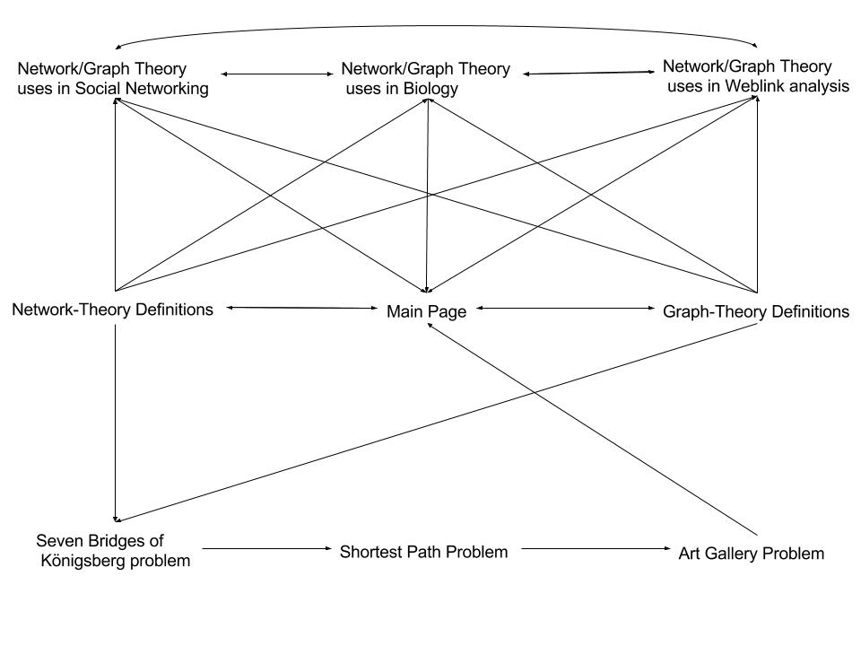

Welcome to GitHub Pages.

Above is the photo of the seven bridges, the probelm is a historical notable problem in mathematics. Its negative resolution by Leonhard Euler in 1736 laid the foundations of graph theory.
The problem was to devise a walk through the city that would cross each bridge once and only once, the starting point and ending point did not matter. Euler proved the solution had no solution, however the hard part was not to prove that as nobody had come up with a valid solution, but instead it was to prove that it was impossible. He did this by simplifying it to the network you see below, by showing that one of the nodes all had odd number of lines conecting them he proved that it was impossible.

